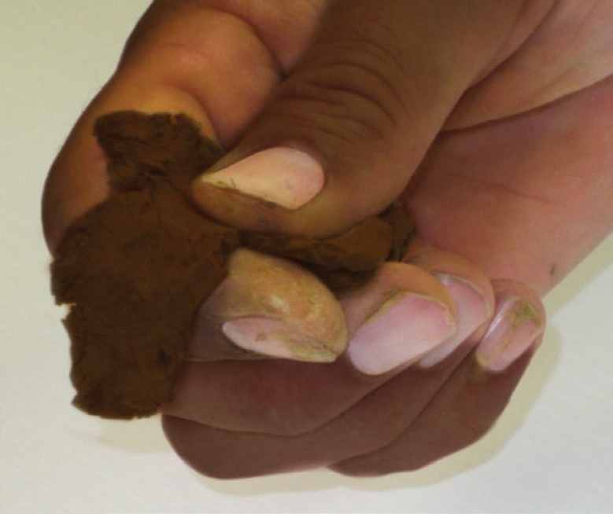
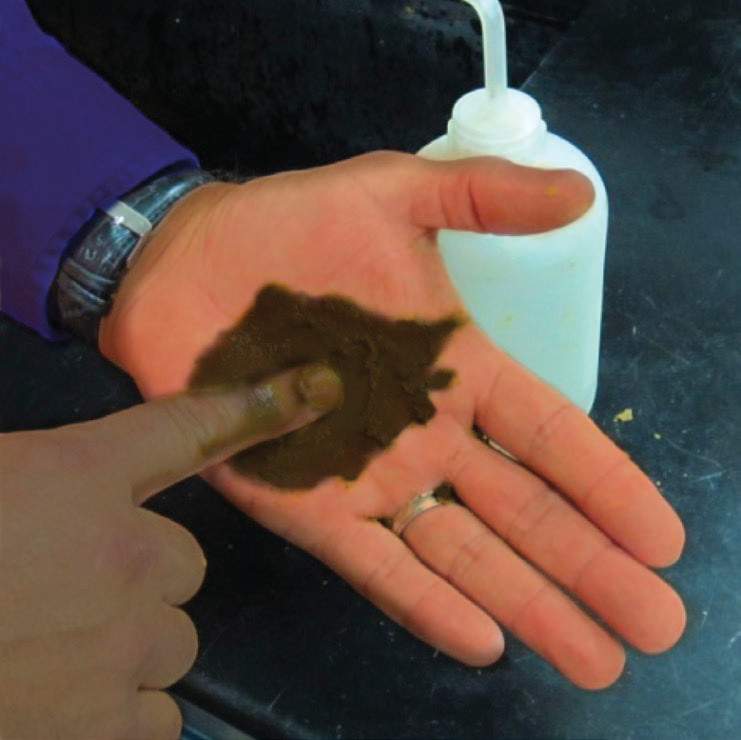

Step 3: Determine if the moist soil will form a ribbon when a soil ball is extruded between the thumb and forefinger (refer to Figure 2.5). Also, determine how long a diameter ribbon will form when rolled between palms or on a flat table.
When starting with dry clays, make sure you allow time for the clays to become moist, and make sure ‘gritty’ particles are not aggregated.

The principle behind forming ribbons is related to the cohesion that exists among clay particles. Clays are sticky when moist, and so the ribbon length is proportional to the clay content. If the ribbon length is:
- (a)less than 2.5 cm, the general category of soil texture is loam.
- (b)between 2.5 cm and 5 cm, the general category of soil texture is clay loam.
- (c)greater than 5 cm, the general category of soil texture is clay.
After determining the general category by clay content, move to step 4.
Step 4: After completing the ribbon test, determine the modifier if it is necessary. Add water to a pinch of soil in the palm of your hand until you have a muddy puddle. Rub the mud puddle against your palm (refer to Figure 2.6). Feel as if the sample is worked in the hand.

If grittiness:
- (a)dominates, then the modifier, ‘sandy’, will be added to the general category determined in step 3, for example, sandy loam, sandy clay loam, or sandy clay.
- (b)does not dominate, but smoothness does, then a modifier of silt will be added, for example, silt loam, silty clay loam, or silty clay. Silt is not sticky, but is smooth like flour, foundation make-up, or talcum powder.